Code
source("../dsan-globals/_globals.r")
set.seed(5300)DSAN 5300: Statistical Learning
Spring 2026, Georgetown University
What happens to my dependent variable \(Y\) when my independent variable \(X\) changes by 1 unit?
Whenever you carry out a regression, keep the goal in the front of your mind:
source("../dsan-globals/_globals.r")
set.seed(5300)\[ \DeclareMathOperator*{\argmax}{argmax} \DeclareMathOperator*{\argmin}{argmin} \newcommand{\bigexp}[1]{\exp\mkern-4mu\left[ #1 \right]} \newcommand{\bigexpect}[1]{\mathbb{E}\mkern-4mu \left[ #1 \right]} \newcommand{\definedas}{\overset{\small\text{def}}{=}} \newcommand{\definedalign}{\overset{\phantom{\text{defn}}}{=}} \newcommand{\eqeventual}{\overset{\text{eventually}}{=}} \newcommand{\Err}{\text{Err}} \newcommand{\expect}[1]{\mathbb{E}[#1]} \newcommand{\expectsq}[1]{\mathbb{E}^2[#1]} \newcommand{\fw}[1]{\texttt{#1}} \newcommand{\given}{\mid} \newcommand{\green}[1]{\color{green}{#1}} \newcommand{\heads}{\outcome{heads}} \newcommand{\iid}{\overset{\text{\small{iid}}}{\sim}} \newcommand{\lik}{\mathcal{L}} \newcommand{\loglik}{\ell} \DeclareMathOperator*{\maximize}{maximize} \DeclareMathOperator*{\minimize}{minimize} \newcommand{\mle}{\textsf{ML}} \newcommand{\nimplies}{\;\not\!\!\!\!\implies} \newcommand{\orange}[1]{\color{orange}{#1}} \newcommand{\outcome}[1]{\textsf{#1}} \newcommand{\param}[1]{{\color{purple} #1}} \newcommand{\pgsamplespace}{\{\green{1},\green{2},\green{3},\purp{4},\purp{5},\purp{6}\}} \newcommand{\pedge}[2]{\require{enclose}\enclose{circle}{~{#1}~} \rightarrow \; \enclose{circle}{\kern.01em {#2}~\kern.01em}} \newcommand{\pnode}[1]{\require{enclose}\enclose{circle}{\kern.1em {#1} \kern.1em}} \newcommand{\ponode}[1]{\require{enclose}\enclose{box}[background=lightgray]{{#1}}} \newcommand{\pnodesp}[1]{\require{enclose}\enclose{circle}{~{#1}~}} \newcommand{\purp}[1]{\color{purple}{#1}} \newcommand{\sign}{\text{Sign}} \newcommand{\spacecap}{\; \cap \;} \newcommand{\spacewedge}{\; \wedge \;} \newcommand{\tails}{\outcome{tails}} \newcommand{\Var}[1]{\text{Var}[#1]} \newcommand{\bigVar}[1]{\text{Var}\mkern-4mu \left[ #1 \right]} \]
Final reminder that Regression, PCA have different goals!
If your goal was to, e.g., generate realistic \((x,y)\) pairs, then (mathematically) you want PCA! Roughly:
\[ \widehat{f}_{\text{PCA}} = \min_{\mathbf{c}}\left[ \sum_{i=1}^{n} (\widehat{x}_i(\mathbf{c}) - x_i)^2 + (\widehat{y}_i(\mathbf{c}) - y_i)^2 \right] \]
Our goal is a good predictor of \(Y\):
\[ \widehat{f}_{\text{Reg}} = \min_{\beta_0, \beta_1}\left[ \sum_{i=1}^{n} (\widehat{y}_i(\beta) - y_i)^2 \right] \]
library(tidyverse)
set.seed(5321)
N <- 11
x <- seq(from = 0, to = 1, by = 1 / (N - 1))
y <- x + rnorm(N, 0, 0.2)
mean_y <- mean(y)
spread <- y - mean_y
df <- tibble(x = x, y = y, spread = spread)
ggplot(df, aes(x=x, y=y)) +
geom_abline(slope=1, intercept=0, linetype="dashed", color=cbPalette[1], linewidth=g_linewidth*2) +
geom_segment(xend=(x+y)/2, yend=(x+y)/2, linewidth=g_linewidth*2, color=cbPalette[2]) +
geom_point(size=g_pointsize) +
coord_equal() +
xlim(0, 1) + ylim(0, 1) +
dsan_theme("half") +
labs(
title = "Principal Component Line"
)
ggplot(df, aes(x=x, y=y)) +
geom_abline(slope=1, intercept=0, linetype="dashed", color=cbPalette[1], linewidth=g_linewidth*2) +
geom_segment(xend=x, yend=x, linewidth=g_linewidth*2, color=cbPalette[2]) +
geom_point(size=g_pointsize) +
coord_equal() +
xlim(0, 1) + ylim(0, 1) +
dsan_theme("half") +
labs(
title = "Regression Line"
)── Attaching core tidyverse packages ──────────────────────── tidyverse 2.0.0 ──
✔ dplyr 1.1.4 ✔ readr 2.1.5
✔ forcats 1.0.0 ✔ stringr 1.5.1
✔ lubridate 1.9.4 ✔ tibble 3.3.0
✔ purrr 1.0.4 ✔ tidyr 1.3.1
── Conflicts ────────────────────────────────────────── tidyverse_conflicts() ──
✖ dplyr::filter() masks stats::filter()
✖ dplyr::lag() masks stats::lag()
ℹ Use the conflicted package (<http://conflicted.r-lib.org/>) to force all conflicts to become errorsWarning: Removed 1 row containing missing values or values outside the scale range
(`geom_segment()`).Warning: Removed 1 row containing missing values or values outside the scale range
(`geom_point()`).
Warning: Removed 1 row containing missing values or values outside the scale range
(`geom_segment()`).Warning: Removed 1 row containing missing values or values outside the scale range
(`geom_point()`).
On the difference between these two lines, and why it matters, I cannot recommend Gelman and Hill (2007) enough!
\[ Y = \beta_1 X + \varepsilon \]
library(latex2exp)
set.seed(5300)
# rand_slope <- log(runif(80, min=0, max=1))
# rand_slope[41:80] <- -rand_slope[41:80]
# rand_lines <- tibble::tibble(
# id=1:80, slope=rand_slope, intercept=0
# )
# angles <- runif(100, -pi/2, pi/2)
angles <- seq(from=-pi/2, to=pi/2, length.out=50)
possible_lines <- tibble::tibble(
slope=tan(angles), intercept=0
)
num_points <- 30
x_vals <- runif(num_points, 0, 1)
y0_vals <- 0.5 * x_vals + 0.25
y_noise <- rnorm(num_points, 0, 0.07)
y_vals <- y0_vals + y_noise
rand_df <- tibble::tibble(x=x_vals, y=y_vals)
title_exp <- TeX("Parameter Space ($\\beta_1$)")
# Main plot object
gen_lines_plot <- function(point_size=2.5) {
lines_plot <- rand_df |> ggplot(aes(x=x, y=y)) +
geom_point(size=point_size) +
geom_hline(yintercept=0, linewidth=1.5) +
geom_vline(xintercept=0, linewidth=1.5) +
# Point at origin
geom_point(data=data.frame(x=0, y=0), aes(x=x, y=y), size=4) +
xlim(-1,1) +
ylim(-1,1) +
# coord_fixed() +
theme_dsan_min(base_size=28)
return(lines_plot)
}
main_lines_plot <- gen_lines_plot()
main_lines_plot +
# Parameter space of possible lines
geom_abline(
data=possible_lines,
aes(slope=slope, intercept=intercept, color='possible'),
# linetype="dotted",
# linewidth=0.75,
alpha=0.25
) +
# True DGP
geom_abline(
aes(
slope=0.5,
intercept=0.25,
color='true'
), linewidth=1, alpha=0.8
) +
scale_color_manual(
element_blank(),
values=c('possible'="black", 'true'=cb_palette[2]),
labels=c('possible'="Possible Fits", 'true'="True DGP")
) +
remove_legend_title() +
labs(
title=title_exp
)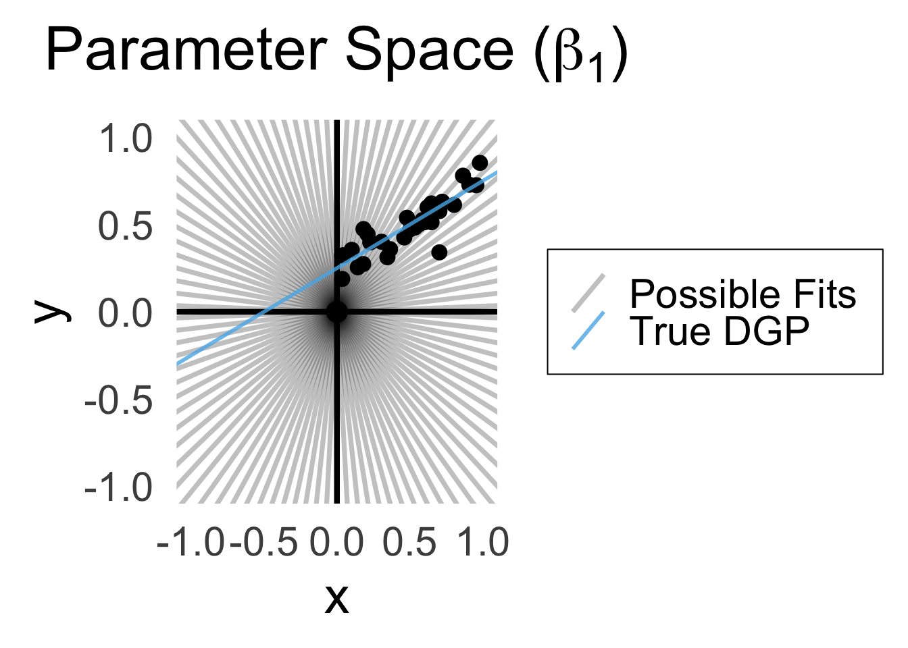
rc1_df <- possible_lines |> slice(n() - 14)
# Predictions for this choice
rc1_pred_df <- rand_df |> mutate(
y_pred = rc1_df$slope * x,
resid = y - y_pred
)
rc1_label <- TeX(paste0("Estimate 1: $\\beta_1 \\approx ",round(rc1_df$slope, 3),"$"))
rc1_lines_plot <- gen_lines_plot(point_size=5)
rc1_lines_plot +
geom_abline(
data=rc1_df,
aes(intercept=intercept, slope=slope),
linewidth=2,
color=cb_palette[1]
) +
geom_segment(
data=rc1_pred_df,
aes(x=x, y=y, xend=x, yend=y_pred),
# color=cb_palette[1]
) +
xlim(0, 1) + ylim(0, 1.5) +
labs(
title = rc1_label
)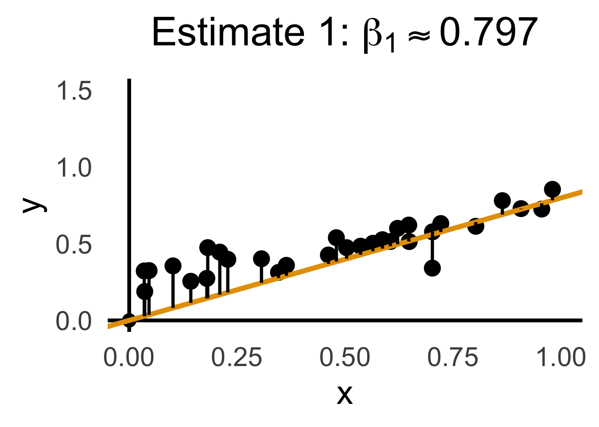
gen_resid_plot <- function(pred_df) {
rc_rss <- sum((pred_df$resid)^2)
rc_resid_label <- TeX(paste0("Residuals: RSS $\\approx$ ",round(rc_rss,3)))
rc_resid_plot <- pred_df |> ggplot(aes(x=x, y=resid)) +
geom_point(size=5) +
geom_hline(
yintercept=0,
color=cb_palette[1],
linewidth=1.5
) +
geom_segment(
aes(xend=x, yend=0)
) +
theme_dsan(base_size=28) +
theme(axis.line.x = element_blank()) +
ylim(-0.75, 0.25) +
labs(
title=rc_resid_label
)
return(rc_resid_plot)
}
rc1_resid_plot <- gen_resid_plot(rc1_pred_df)
rc1_resid_plot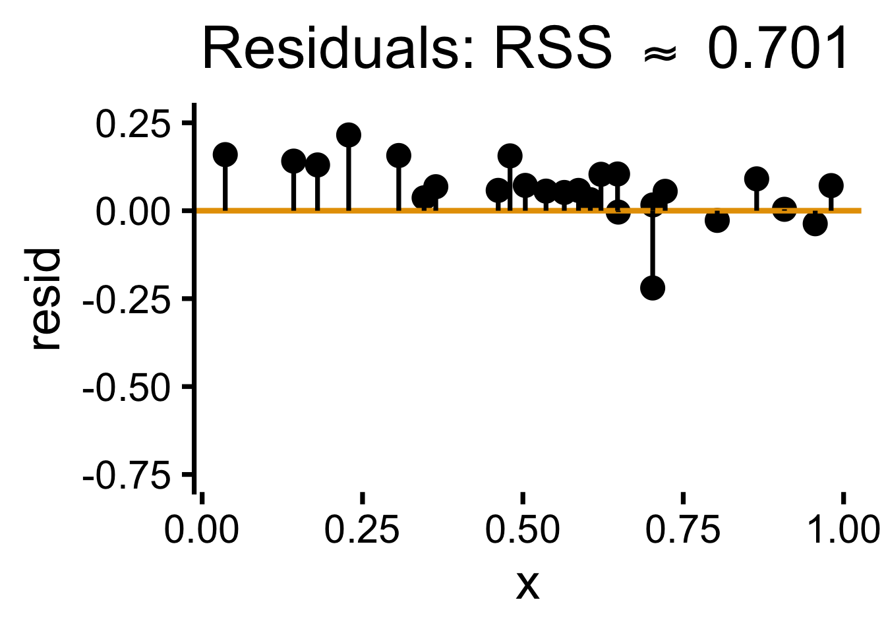
rc2_df <- possible_lines |> slice(n() - 9)
# Predictions for this choice
rc2_pred_df <- rand_df |> mutate(
y_pred = rc2_df$slope * x,
resid = y - y_pred
)
rc2_label <- TeX(paste0("Estimate 2: $\\beta_1 \\approx ",round(rc2_df$slope,3),"$"))
rc2_lines_plot <- gen_lines_plot(point_size=5)
rc2_lines_plot +
geom_abline(
data=rc2_df,
aes(intercept=intercept, slope=slope),
linewidth=2,
color=cb_palette[3]
) +
geom_segment(
data=rc2_pred_df,
aes(
x=x, y=y, xend=x,
# yend=ifelse(y_pred <= 1, y_pred, Inf)
yend=y_pred
)
# color=cb_palette[1]
) +
xlim(0, 1) + ylim(0, 1.5) +
labs(
title=rc2_label
)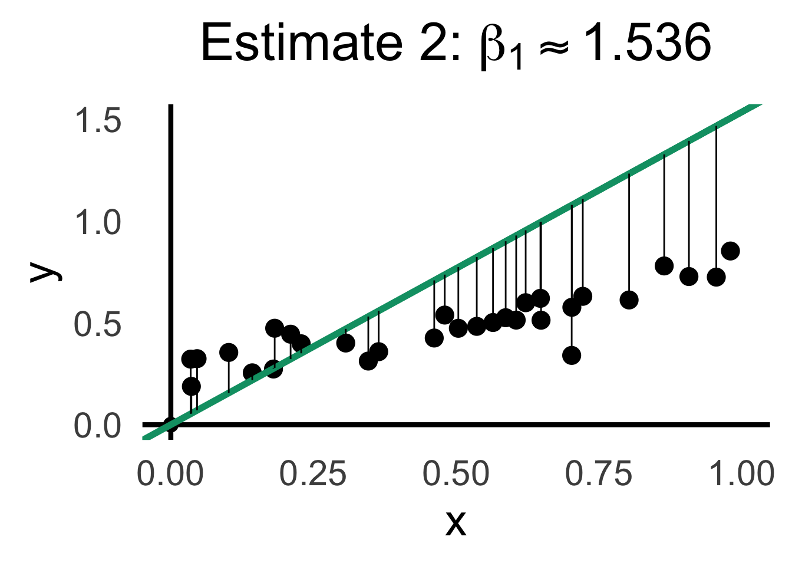
rc2_resid_plot <- gen_resid_plot(rc2_pred_df)
rc2_resid_plotWarning: Removed 2 rows containing missing values or values outside the scale range
(`geom_point()`).Warning: Removed 2 rows containing missing values or values outside the scale range
(`geom_segment()`).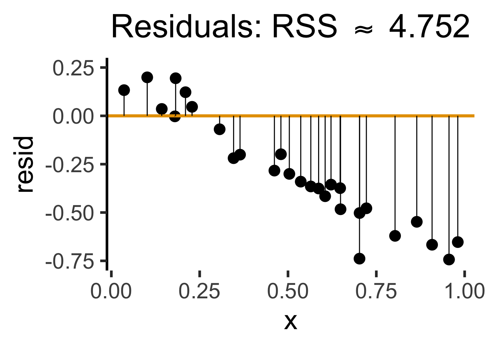
\[ \begin{align*} \beta_1^* = \overbrace{\argmin}^{\begin{array}{c} \text{\small{Find thing}} \\[-5mm] \text{\small{that minimizes}}\end{array}}_{\beta_1}\left[ \sum_{i=1}^{n}(y_i - \widehat{y}_i)^2 \right] = \argmin_{\beta_1}\left[ \sum_{i=1}^{n}(y_i - \beta_1x_i)^2 \right] \end{align*} \]
We can compute this derivative to obtain:
\[ \frac{\partial}{\partial\beta_1}\left[ \sum_{i=1}^{n}(\beta_1x_i - y_i)^2 \right] = \sum_{i=1}^{n}\frac{\partial}{\partial\beta_1}(\beta_1x_i - y_i)^2 = \sum_{i=1}^{n}2(\beta_1x_i - y_i)x_i \]
And our first-order condition means that:
\[ \sum_{i=1}^{n}2(\beta_1^*x_i - y_i)x_i = 0 \iff \beta_1^*\sum_{i=1}^{n}x_i^2 = \sum_{i=1}^{n}x_iy_i \iff \boxed{\beta_1^* = \frac{\sum_{i=1}^{n}x_iy_i}{\sum_{i=1}^{n}x_i^2}} \]
R vs. statsmodelslm()
ad_df <- read_csv('assets/Advertising.csv')New names:
Rows: 200 Columns: 5
── Column specification
──────────────────────────────────────────────────────── Delimiter: "," dbl
(5): ...1, TV, radio, newspaper, sales
ℹ Use `spec()` to retrieve the full column specification for this data. ℹ
Specify the column types or set `show_col_types = FALSE` to quiet this message.
• `` -> `...1`lin_model <- lm(sales ~ TV, data=ad_df)
summary(lin_model)
Call:
lm(formula = sales ~ TV, data = ad_df)
Residuals:
Min 1Q Median 3Q Max
-8.3860 -1.9545 -0.1913 2.0671 7.2124
Coefficients:
Estimate Std. Error t value Pr(>|t|)
(Intercept) 7.032594 0.457843 15.36 <2e-16 ***
TV 0.047537 0.002691 17.67 <2e-16 ***
---
Signif. codes: 0 '***' 0.001 '**' 0.01 '*' 0.05 '.' 0.1 ' ' 1
Residual standard error: 3.259 on 198 degrees of freedom
Multiple R-squared: 0.6119, Adjusted R-squared: 0.6099
F-statistic: 312.1 on 1 and 198 DF, p-value: < 2.2e-16General syntax:
lm(
dependent ~ independent + controls,
data = my_df
)smf.ols()
import statsmodels.formula.api as smf
results = smf.ols("sales ~ TV", data=ad_df).fit()
print(results.summary(slim=True)) OLS Regression Results
==============================================================================
Dep. Variable: sales R-squared: 0.612
Model: OLS Adj. R-squared: 0.610
No. Observations: 200 F-statistic: 312.1
Covariance Type: nonrobust Prob (F-statistic): 1.47e-42
==============================================================================
coef std err t P>|t| [0.025 0.975]
------------------------------------------------------------------------------
Intercept 7.0326 0.458 15.360 0.000 6.130 7.935
TV 0.0475 0.003 17.668 0.000 0.042 0.053
==============================================================================
Notes:
[1] Standard Errors assume that the covariance matrix of the errors is correctly specified.General syntax:
smf.ols(
"dependent ~ independent + controls",
data = my_df
)library(tidyverse)
gdp_df <- read_csv("assets/gdp_pca.csv")
mil_plot <- gdp_df |> ggplot(aes(x=industrial, y=military)) +
geom_point(size=0.5*g_pointsize) +
geom_smooth(method='lm', formula="y ~ x", linewidth=1) +
theme_dsan() +
labs(
title="Military Exports vs. Industrialization",
x="Industrial Production (% of GDP)",
y="Military Exports (% of All Exports)"
)mil_plot + theme_dsan("quarter")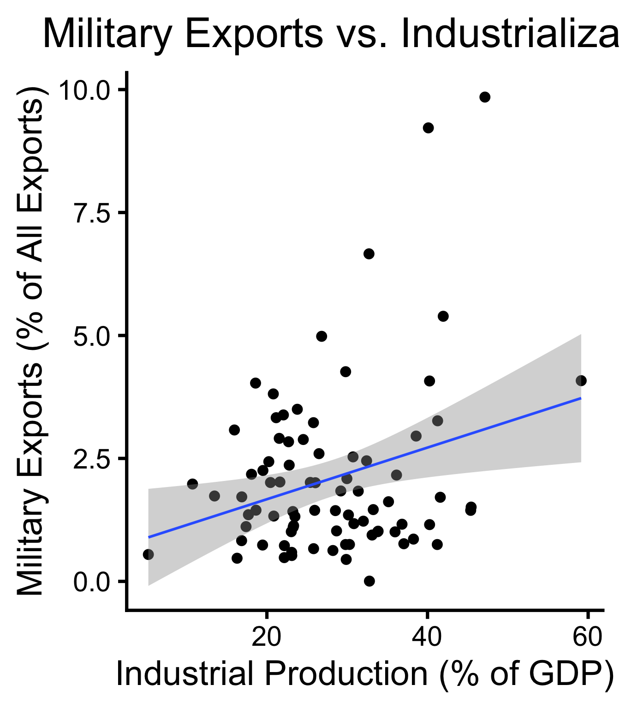
gdp_model <- lm(military ~ industrial, data=gdp_df)
summary(gdp_model)
Call:
lm(formula = military ~ industrial, data = gdp_df)
Residuals:
Min 1Q Median 3Q Max
-2.3354 -1.0997 -0.3870 0.6081 6.7508
Coefficients:
Estimate Std. Error t value Pr(>|t|)
(Intercept) 0.61969 0.59526 1.041 0.3010
industrial 0.05253 0.02019 2.602 0.0111 *
---
Signif. codes: 0 '***' 0.001 '**' 0.01 '*' 0.05 '.' 0.1 ' ' 1
Residual standard error: 1.671 on 79 degrees of freedom
(8 observations deleted due to missingness)
Multiple R-squared: 0.07895, Adjusted R-squared: 0.06729
F-statistic: 6.771 on 1 and 79 DF, p-value: 0.01106| Estimate | Std. Error | t value | Pr(>|t|) | ||
|---|---|---|---|---|---|
| (Intercept) | 0.61969 | 0.59526 | 1.041 | 0.3010 | |
| industrial | 0.05253 | 0.02019 | 2.602 | 0.0111 | * |
| \(\widehat{\beta}\) | Uncertainty | Test stat \(t\) | How extreme is \(t\)? | Signif. Level |
\[ \widehat{y} \approx \class{cb1}{\overset{\beta_0}{\underset{\small \pm 0.595}{0.620}}} + \class{cb2}{\overset{\beta_1}{\underset{\small \pm 0.020}{0.053}}} \cdot x \]
| Estimate | Std. Error | t value | Pr(>|t|) | ||
|---|---|---|---|---|---|
| (Intercept) | 0.61969 | 0.59526 | 1.041 | 0.3010 | |
| industrial | 0.05253 | 0.02019 | 2.602 | 0.0111 | * |
| \(\widehat{\beta}\) | Uncertainty | Test stat \(t\) | How extreme is \(t\)? | Signif. Level |
library(ggplot2)
int_tstat <- 1.041
int_tstat_str <- sprintf("%.02f", int_tstat)
label_df_int <- tribble(
~x, ~y, ~label,
0.25, 0.05, paste0("P(t > ",int_tstat_str,")\n= 0.3")
)
label_df_signif_int <- tribble(
~x, ~y, ~label,
2.7, 0.075, "95% Signif.\nCutoff"
)
funcShaded <- function(x, lower_bound, upper_bound){
y <- dnorm(x)
y[x < lower_bound | x > upper_bound] <- NA
return(y)
}
funcShadedIntercept <- function(x) funcShaded(x, int_tstat, Inf)
funcShadedSignif <- function(x) funcShaded(x, 1.96, Inf)
ggplot(data=data.frame(x=c(-3,3)), aes(x=x)) +
stat_function(fun=dnorm, linewidth=g_linewidth) +
geom_vline(aes(xintercept=int_tstat), linewidth=g_linewidth, linetype="dashed") +
geom_vline(aes(xintercept = 1.96), linewidth=g_linewidth, linetype="solid") +
stat_function(fun = funcShadedIntercept, geom = "area", fill = cbPalette[1], alpha = 0.5) +
stat_function(fun = funcShadedSignif, geom = "area", fill = "grey", alpha = 0.333) +
geom_text(label_df_int, mapping = aes(x = x, y = y, label = label), size = 10) +
geom_text(label_df_signif_int, mapping = aes(x = x, y = y, label = label), size = 8) +
# Add single additional tick
scale_x_continuous(breaks=c(-2, 0, int_tstat, 2), labels=c("-2","0",int_tstat_str,"2")) +
dsan_theme("quarter") +
labs(
title = "t Value for Intercept",
x = "t",
y = "Density"
) +
theme(axis.text.x = element_text(colour = c("black", "black", cbPalette[1], "black")))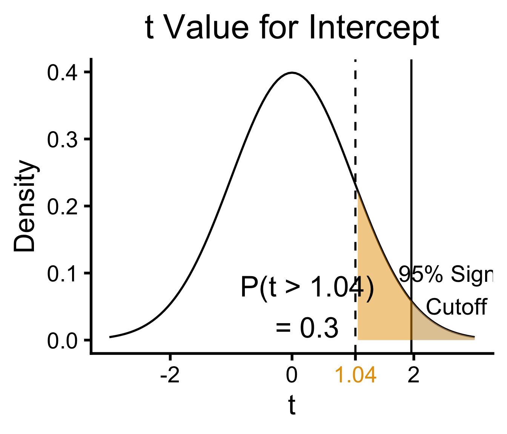
library(ggplot2)
coef_tstat <- 2.602
coef_tstat_str <- sprintf("%.02f", coef_tstat)
label_df_coef <- tribble(
~x, ~y, ~label,
3.65, 0.06, paste0("P(t > ",coef_tstat_str,")\n= 0.01")
)
label_df_signif_coef <- tribble(
~x, ~y, ~label,
1.05, 0.03, "95% Signif.\nCutoff"
)
funcShadedCoef <- function(x) funcShaded(x, coef_tstat, Inf)
ggplot(data=data.frame(x=c(-4,4)), aes(x=x)) +
stat_function(fun=dnorm, linewidth=g_linewidth) +
geom_vline(aes(xintercept=coef_tstat), linetype="dashed", linewidth=g_linewidth) +
geom_vline(aes(xintercept=1.96), linetype="solid", linewidth=g_linewidth) +
stat_function(fun = funcShadedCoef, geom = "area", fill = cbPalette[2], alpha = 0.5) +
stat_function(fun = funcShadedSignif, geom = "area", fill = "grey", alpha = 0.333) +
# Label shaded area
geom_text(label_df_coef, mapping = aes(x = x, y = y, label = label), size = 10) +
# Label significance cutoff
geom_text(label_df_signif_coef, mapping = aes(x = x, y = y, label = label), size = 8) +
coord_cartesian(clip = "off") +
# Add single additional tick
scale_x_continuous(breaks=c(-4, -2, 0, 2, coef_tstat, 4), labels=c("-4", "-2","0", "2", coef_tstat_str,"4")) +
dsan_theme("quarter") +
labs(
title = "t Value for Coefficient",
x = "t",
y = "Density"
) +
theme(axis.text.x = element_text(colour = c("black", "black", "black", "black", cbPalette[2], "black")))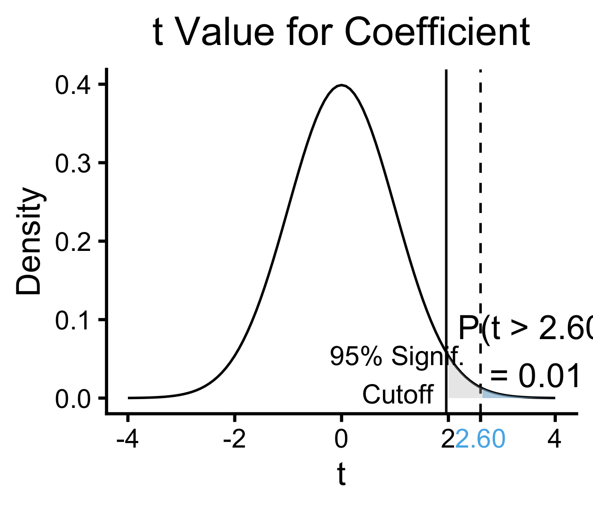
Recall homoskedasticity assumption: Given our model
\[ y_i = \beta_0 + \beta_1x_i + \varepsilon_i \]
the errors \(\varepsilon_i\) should not vary systematically with \(i\)
Formally: \(\forall i \left[ \Var{\varepsilon_i} = \sigma^2 \right]\)
library(broom)
gdp_resid_df <- augment(gdp_model)
ggplot(gdp_resid_df, aes(x = industrial, y = .resid)) +
geom_point(size = g_pointsize/2) +
geom_hline(yintercept=0, linetype="dashed") +
dsan_theme("quarter") +
labs(
title = "Residual Plot for Military ~ Industrial",
x = "Fitted Value",
y = "Residual"
)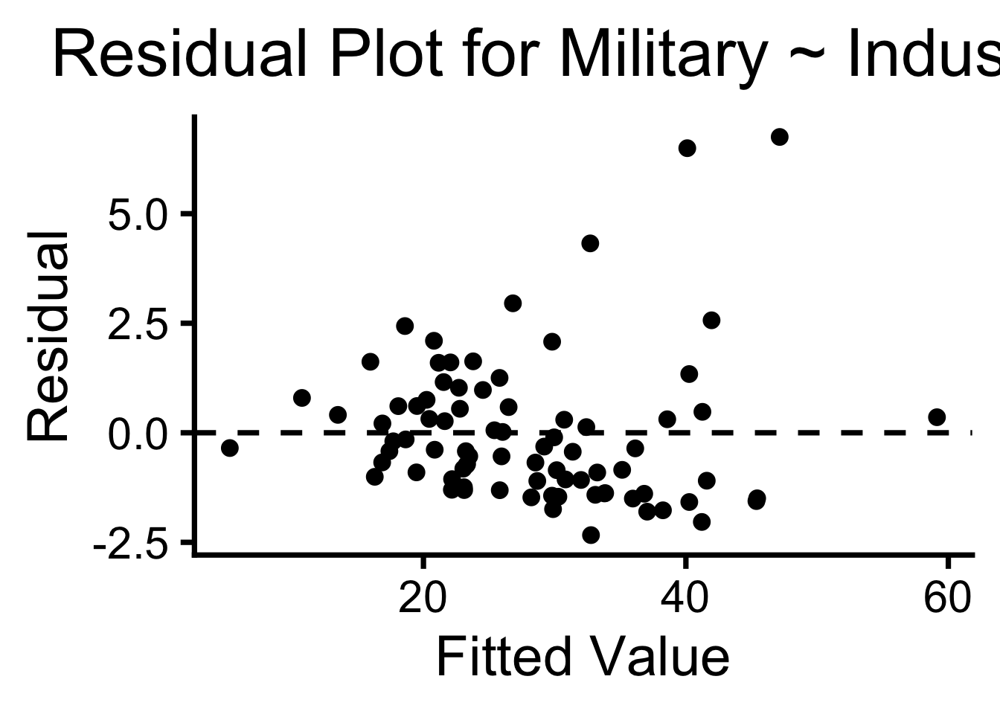
x <- 1:80
errors <- rnorm(length(x), 0, x^2/1000)
y <- x + errors
het_model <- lm(y ~ x)
df_het <- augment(het_model)
ggplot(df_het, aes(x = .fitted, y = .resid)) +
geom_point(size = g_pointsize / 2) +
geom_hline(yintercept = 0, linetype = "dashed") +
dsan_theme("quarter") +
labs(
title = "Residual Plot for Heteroskedastic Data",
x = "Fitted Value",
y = "Residual"
)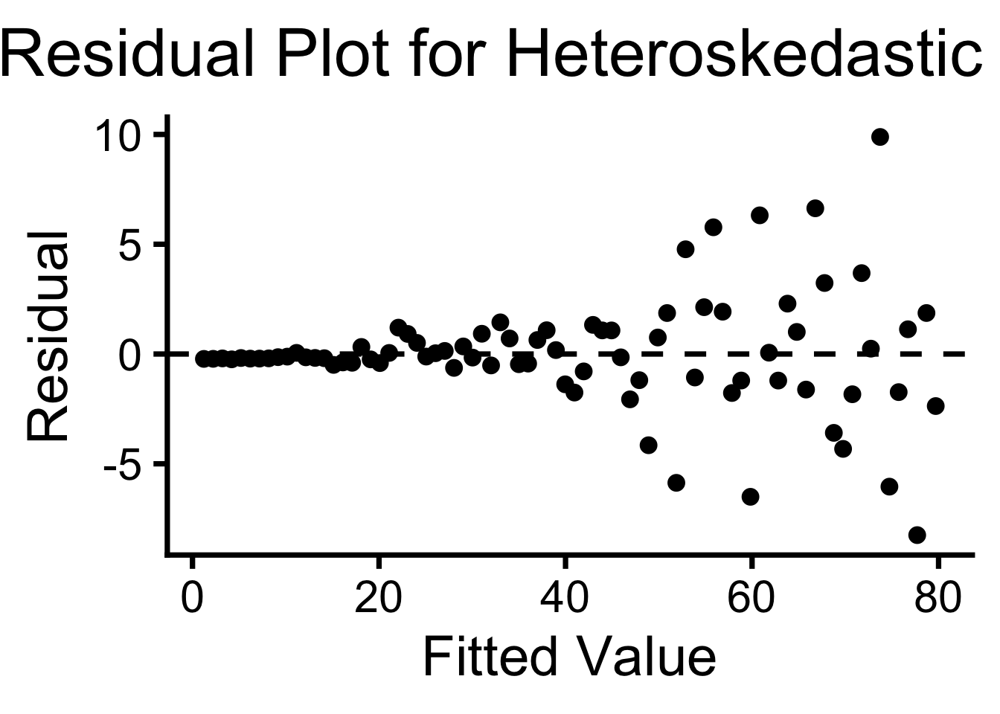
ggplot(df_het, aes(sample=.resid)) +
stat_qq(size = g_pointsize/2) + stat_qq_line(linewidth = g_linewidth) +
dsan_theme(base_size=30) +
labs(
title = "Q-Q Plot for Heteroskedastic Data",
x = "Normal Distribution Quantiles",
y = "Observed Data Quantiles"
)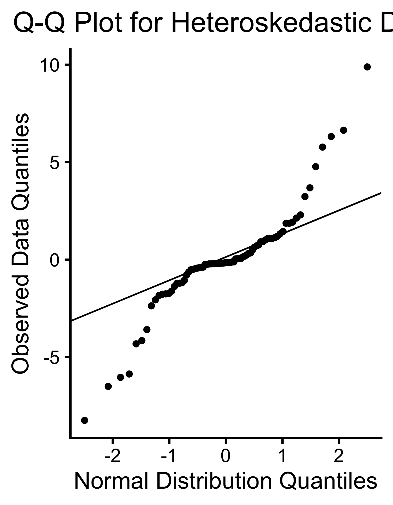
ggplot(gdp_resid_df, aes(sample=.resid)) +
stat_qq(size = g_pointsize/2) + stat_qq_line(linewidth = g_linewidth) +
dsan_theme(base_size=30) +
labs(
title = "Q-Q Plot for Industrial ~ Military Residuals",
x = "Normal Distribution Quantiles",
y = "Observed Data Quantiles"
)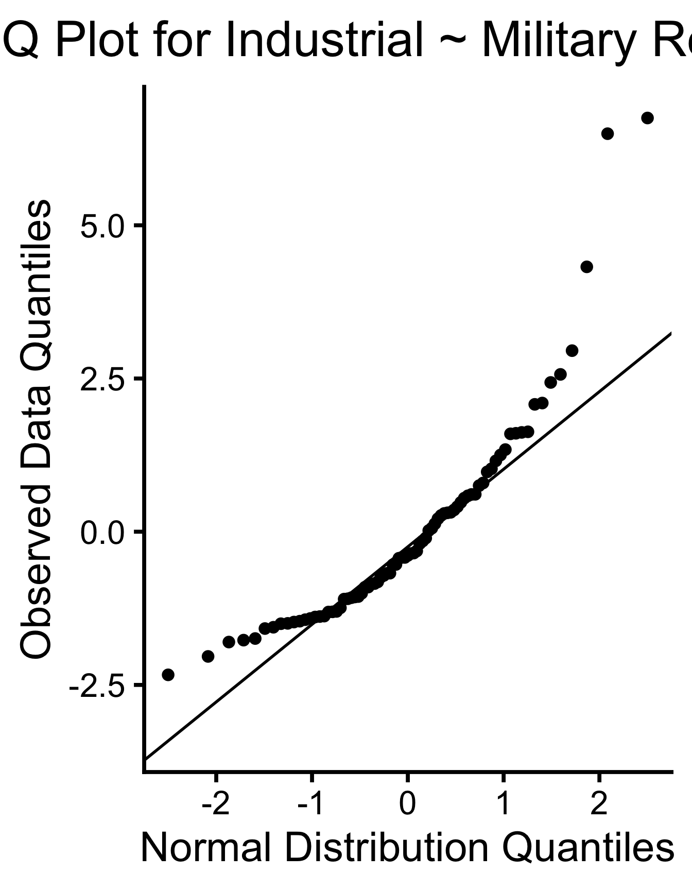
\[ \widehat{y}_i = \beta_0 + \beta_1x_{i,1} + \beta_2x_{i,2} + \cdots + \beta_M x_{i,M} \]
library(extraDistr)
set.seed(5650)
n_c <- 300
cfork_df <- tibble(
Z = rbern(n_c),
X = rnorm(n_c, 2 * Z - 1),
Y = rnorm(n_c, 2 * Z - 1)
)
library(latex2exp)
overall_lm <- lm(Y ~ X, data=cfork_df)
overall_slope <- round(overall_lm$coef['X'], 3)
z0_lm <- lm(Y ~ X, data=cfork_df |> filter(Z == 0))
z0_slope <- round(z0_lm$coef['X'], 2)
z0_label <- paste0("$Slope_{Z=0} = ",z0_slope,"$")
z0_leg_label <- TeX(paste0("0 $(m=",z0_slope,")$"))
z1_lm <- lm(Y ~ X, data=cfork_df |> filter(Z == 1))
z1_slope <- round(z1_lm$coef['X'], 2)
z1_label <- paste0("$Slope_{Z=1} = ",z1_slope,"$")
z_texlabel <- TeX(paste0(z0_label, " | ", z1_label))
cfork_xmin <- min(cfork_df$X)
cfork_xmax <- max(cfork_df$X)
ggplot() +
# Points
geom_point(
data=cfork_df,
aes(x=X, y=Y, color=factor(Z)),
size=0.6*g_pointsize,
alpha=0.8
) +
# Overall lm
geom_smooth(
data=cfork_df, aes(x=X, y=Y),
method = lm, se = FALSE,
linewidth = 2.5, color='black'
) +
# Stratified lm
# (slightly larger black lines)
geom_smooth(
data=cfork_df,
aes(x=X, y=Y, group=factor(Z)),
method=lm, se=FALSE, fullrange=TRUE,
linewidth=2.75, color='black'
) +
# (Colored lines)
geom_smooth(
data=cfork_df,
aes(x=X, y=Y, color=factor(Z)),
method=lm, se=FALSE, fullrange=TRUE,
linewidth=2
) +
theme_dsan(base_size=20) +
theme(
plot.title = element_text(size=24),
plot.subtitle = element_text(size=20)
) +
coord_equal() +
labs(
title = paste0(
"Fork: Slope = ",overall_slope
),
subtitle=z_texlabel,
x = "X", y = "Y", color = "Z"
)
set.seed(5650)
cpipe_df <- tibble(
X = rnorm(n_c),
Z = rbern(n_c, plogis(X)),
Y = rnorm(n_c, 2 * Z - 1)
)
cpipe_lm <- lm(Y ~ X, data=cpipe_df)
cpipe_slope <- round(cpipe_lm$coef['X'], 3)
cpipe_z0_lm <- lm(Y ~ X, data=cpipe_df |> filter(Z == 0))
cpipe_z0_slope <- round(cpipe_z0_lm$coef['X'], 2)
cpipe_z0_label <- paste0("$Slope_{Z=0} = ",cpipe_z0_slope,"$")
cpipe_z1_lm <- lm(Y ~ X, data=cpipe_df |> filter(Z == 1))
cpipe_z1_slope <- round(cpipe_z1_lm$coef['X'], 2)
cpipe_z1_label <- paste0("$Slope_{Z=1} = ",cpipe_z1_slope,"$")
cpipe_z_texlabel <- TeX(paste0(cpipe_z0_label, " | ", cpipe_z1_label))
cpipe_xmin <- min(cpipe_df$X)
cpipe_xmax <- max(cpipe_df$X)
ggplot() +
# Points
geom_point(
data=cpipe_df |> filter(Y > -3),
aes(x=X, y=Y, color=factor(Z)),
size=0.6*g_pointsize,
alpha=0.8
) +
# Overall lm
geom_smooth(
data=cpipe_df, aes(x=X, y=Y),
method = lm, se = FALSE,
linewidth = 2.5, color='black'
) +
# Stratified lm
# (slightly larger black lines)
geom_smooth(
data=cpipe_df,
aes(x=X, y=Y, group=factor(Z)),
method=lm, se=FALSE, fullrange=TRUE,
linewidth=2.75, color='black'
) +
# (Colored lines)
geom_smooth(
data=cpipe_df,
aes(x=X, y=Y, color=factor(Z)),
method=lm, se=FALSE, fullrange=TRUE,
linewidth=2
) +
theme_dsan(base_size=20) +
theme(
plot.title = element_text(size=24),
plot.subtitle = element_text(size=20)
) +
coord_equal() +
labs(
title = paste0(
"Pipe: Slope = ",cpipe_slope
),
subtitle=cpipe_z_texlabel,
x = "X", y = "Y", color = "Z"
)
set.seed(5650)
ccoll_df <- tibble(
X = rnorm(n_c),
Y = rnorm(n_c),
Z = rbern(n_c, plogis(2 * (X + Y - 1)))
)
ccoll_lm <- lm(Y ~ X, data=ccoll_df)
ccoll_slope <- round(ccoll_lm$coef['X'], 3)
ccoll_z0_lm <- lm(Y ~ X, data=ccoll_df |> filter(Z == 0))
ccoll_z0_slope <- round(ccoll_z0_lm$coef['X'], 2)
ccoll_z0_label <- paste0("$Slope_{Z=0} = ",ccoll_z0_slope,"$")
ccoll_z1_lm <- lm(Y ~ X, data=ccoll_df |> filter(Z == 1))
ccoll_z1_slope <- round(ccoll_z1_lm$coef['X'], 2)
ccoll_z1_label <- paste0("$Slope_{Z=1} = ",ccoll_z1_slope,"$")
ccoll_z_texlabel <- TeX(paste0(ccoll_z0_label, " | ", ccoll_z1_label))
ccoll_xmin <- min(ccoll_df$X)
ccoll_xmax <- max(ccoll_df$X)
ggplot() +
# Points
geom_point(
data=ccoll_df |> filter(Y > -3),
aes(x=X, y=Y, color=factor(Z)),
size=0.6*g_pointsize,
alpha=0.8
) +
# Overall lm
geom_smooth(
data=ccoll_df, aes(x=X, y=Y),
method = lm, se = FALSE,
linewidth = 2.5, color='black'
) +
# Stratified lm
# (slightly larger black lines)
geom_smooth(
data=ccoll_df,
aes(x=X, y=Y, group=factor(Z)),
method=lm, se=FALSE, fullrange=TRUE,
linewidth=2.75, color='black'
) +
# (Colored lines)
geom_smooth(
data=ccoll_df,
aes(x=X, y=Y, color=factor(Z)),
method=lm, se=FALSE, fullrange=TRUE,
linewidth=2
) +
theme_dsan(base_size=20) +
theme(
plot.title = element_text(size=24),
plot.subtitle = element_text(size=20)
) +
coord_equal() +
labs(
title = paste0(
"Collider: Slope = ",ccoll_slope
),
subtitle=ccoll_z_texlabel,
x = "X", y = "Y", color = "Z"
)
Attaching package: 'extraDistr'The following object is masked from 'package:purrr':
rdunif`geom_smooth()` using formula = 'y ~ x'`geom_smooth()` using formula = 'y ~ x'
`geom_smooth()` using formula = 'y ~ x'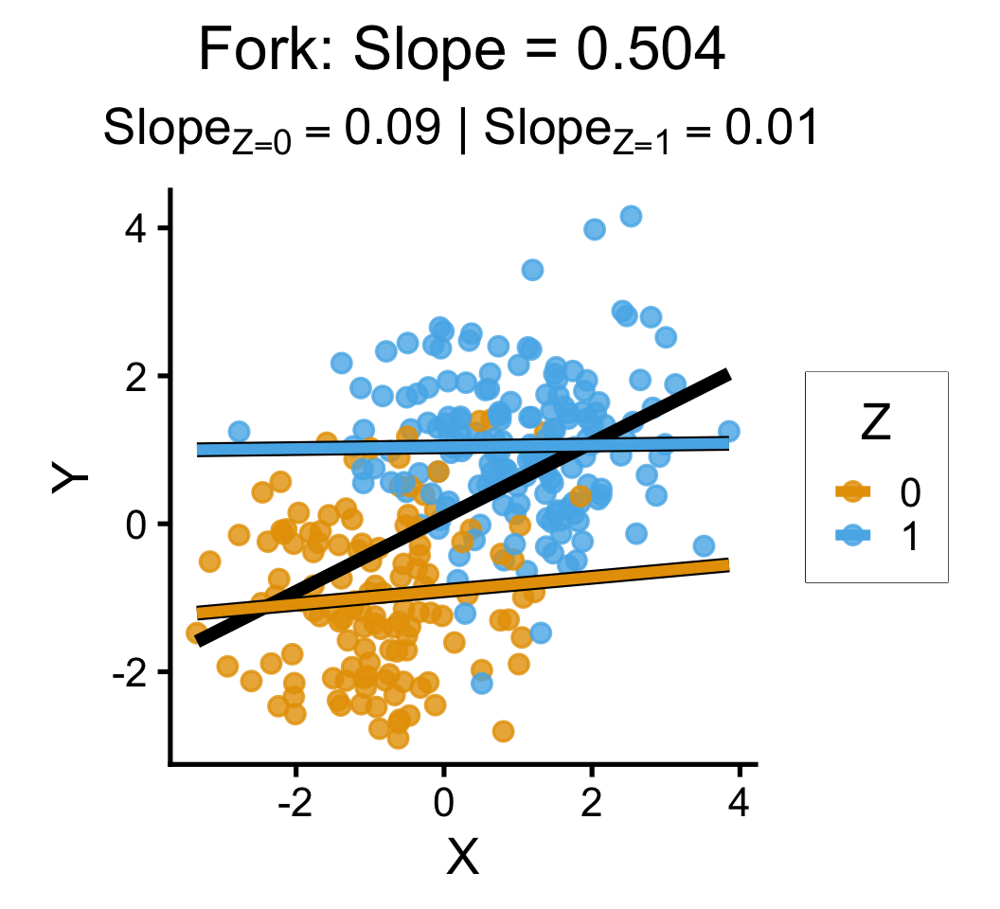
`geom_smooth()` using formula = 'y ~ x'
`geom_smooth()` using formula = 'y ~ x'
`geom_smooth()` using formula = 'y ~ x'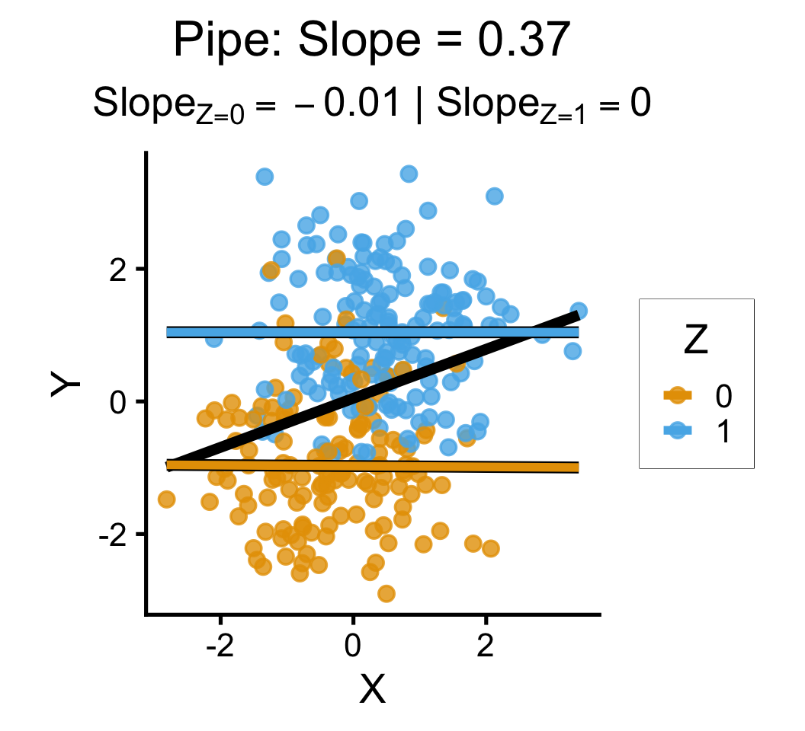
`geom_smooth()` using formula = 'y ~ x'
`geom_smooth()` using formula = 'y ~ x'
`geom_smooth()` using formula = 'y ~ x'

mlr_model = smf.ols(
formula="sales ~ TV + radio + newspaper",
data=ad_df
)
mlr_result = mlr_model.fit()
print(mlr_result.summary().tables[1])==============================================================================
coef std err t P>|t| [0.025 0.975]
------------------------------------------------------------------------------
Intercept 2.9389 0.312 9.422 0.000 2.324 3.554
TV 0.0458 0.001 32.809 0.000 0.043 0.049
radio 0.1885 0.009 21.893 0.000 0.172 0.206
newspaper -0.0010 0.006 -0.177 0.860 -0.013 0.011
==============================================================================radio and newspaper spending constant…
TV advertising is associated withTV and newspaper spending constant…
radio advertising is associated with# print(mlr_result.summary2(float_format='%.3f'))
print(mlr_result.summary2()) Results: Ordinary least squares
=================================================================
Model: OLS Adj. R-squared: 0.896
Dependent Variable: sales AIC: 780.3622
Date: 2026-02-17 18:26 BIC: 793.5555
No. Observations: 200 Log-Likelihood: -386.18
Df Model: 3 F-statistic: 570.3
Df Residuals: 196 Prob (F-statistic): 1.58e-96
R-squared: 0.897 Scale: 2.8409
------------------------------------------------------------------
Coef. Std.Err. t P>|t| [0.025 0.975]
------------------------------------------------------------------
Intercept 2.9389 0.3119 9.4223 0.0000 2.3238 3.5540
TV 0.0458 0.0014 32.8086 0.0000 0.0430 0.0485
radio 0.1885 0.0086 21.8935 0.0000 0.1715 0.2055
newspaper -0.0010 0.0059 -0.1767 0.8599 -0.0126 0.0105
-----------------------------------------------------------------
Omnibus: 60.414 Durbin-Watson: 2.084
Prob(Omnibus): 0.000 Jarque-Bera (JB): 151.241
Skew: -1.327 Prob(JB): 0.000
Kurtosis: 6.332 Condition No.: 454
=================================================================
Notes:
[1] Standard Errors assume that the covariance matrix of the
errors is correctly specified.slr_model = smf.ols(
formula="sales ~ newspaper",
data=ad_df
)
slr_result = slr_model.fit()
print(slr_result.summary2()) Results: Ordinary least squares
==================================================================
Model: OLS Adj. R-squared: 0.047
Dependent Variable: sales AIC: 1220.6714
Date: 2026-02-17 18:26 BIC: 1227.2680
No. Observations: 200 Log-Likelihood: -608.34
Df Model: 1 F-statistic: 10.89
Df Residuals: 198 Prob (F-statistic): 0.00115
R-squared: 0.052 Scale: 25.933
-------------------------------------------------------------------
Coef. Std.Err. t P>|t| [0.025 0.975]
-------------------------------------------------------------------
Intercept 12.3514 0.6214 19.8761 0.0000 11.1260 13.5769
newspaper 0.0547 0.0166 3.2996 0.0011 0.0220 0.0874
------------------------------------------------------------------
Omnibus: 6.231 Durbin-Watson: 1.983
Prob(Omnibus): 0.044 Jarque-Bera (JB): 5.483
Skew: 0.330 Prob(JB): 0.064
Kurtosis: 2.527 Condition No.: 65
==================================================================
Notes:
[1] Standard Errors assume that the covariance matrix of the
errors is correctly specified.ad_df.drop(columns="id").corr() TV radio newspaper sales
TV 1.000000 0.054809 0.056648 0.782224
radio 0.054809 1.000000 0.354104 0.576223
newspaper 0.056648 0.354104 1.000000 0.228299
sales 0.782224 0.576223 0.228299 1.000000radio our sales will tend to be higher…newspaper in those same markets…sales vs. newspaper, we (correctly!) observe that higher values of newspaper are associated with higher values of sales…newspaper advertising is a surrogate for radio advertising \(\implies\) in our SLR, newspaper “gets credit” for the association between radio and sales\[ \begin{align*} Y &= \beta_0 + \beta_1 \times \texttt{income} \\ &\phantom{Y} \end{align*} \]
credit_df <- read_csv("assets/Credit.csv")Rows: 400 Columns: 11
── Column specification ────────────────────────────────────────────────────────
Delimiter: ","
chr (4): Own, Student, Married, Region
dbl (7): Income, Limit, Rating, Cards, Age, Education, Balance
ℹ Use `spec()` to retrieve the full column specification for this data.
ℹ Specify the column types or set `show_col_types = FALSE` to quiet this message.credit_plot <- credit_df |> ggplot(aes(x=Income, y=Balance)) +
geom_point(size=0.5*g_pointsize) +
geom_smooth(
method='lm', formula="y ~ x", linewidth=1,
fullrange=TRUE
) +
theme_dsan() +
labs(
title="Credit Card Balance vs. Income Level",
x="Income ($1K)",
y="Credit Card Balance ($)"
)
credit_plot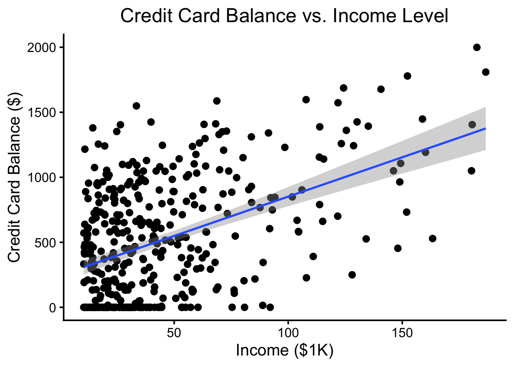
\[ \begin{align*} Y = &\beta_0 + \beta_1 \times \texttt{income} + \beta_2 \times \texttt{Student} \\ &+ \beta_3 \times (\texttt{Student} \times \texttt{Income}) \end{align*} \]
student_plot <- credit_df |> ggplot(aes(x=Income, y=Balance, color=Student)) +
geom_point(size=0.5*g_pointsize) +
geom_smooth(
method='lm', formula="y ~ x", linewidth=1,
fullrange=TRUE
) +
theme_dsan() +
labs(
title="Credit Card Balance vs. Income Level",
x="Income ($1K)",
y="Credit Card Balance ($)"
)
student_plot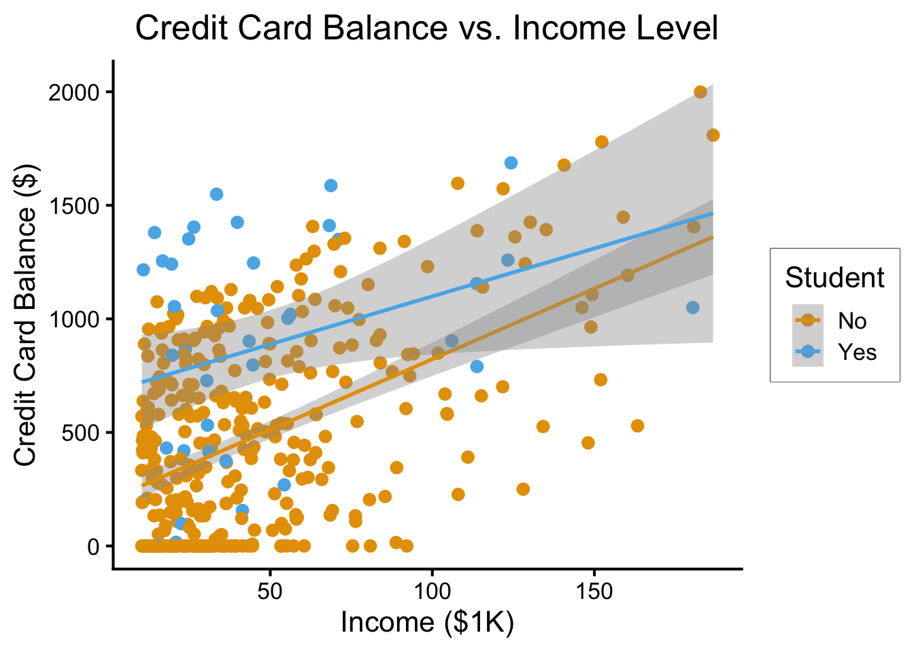
\[ \Pr(Y \mid X) = \beta_0 + \beta_1 X + \varepsilon \]

library(tidyverse)
library(ggExtra)
default_df <- read_csv("assets/Default.csv") |>
mutate(default_num = ifelse(default=="Yes",1,0))Rows: 10000 Columns: 4
── Column specification ────────────────────────────────────────────────────────
Delimiter: ","
chr (2): default, student
dbl (2): balance, income
ℹ Use `spec()` to retrieve the full column specification for this data.
ℹ Specify the column types or set `show_col_types = FALSE` to quiet this message.default_plot <- default_df |> ggplot(aes(x=balance, y=income, color=default, shape=default)) +
geom_point(alpha=0.6) +
theme_classic(base_size=16) +
labs(
title="Credit Defaults by Income and Account Balance",
x = "Account Balance",
y = "Income"
)
default_mplot <- default_plot |> ggMarginal(type="boxplot", groupColour=FALSE, groupFill=TRUE)
default_mplot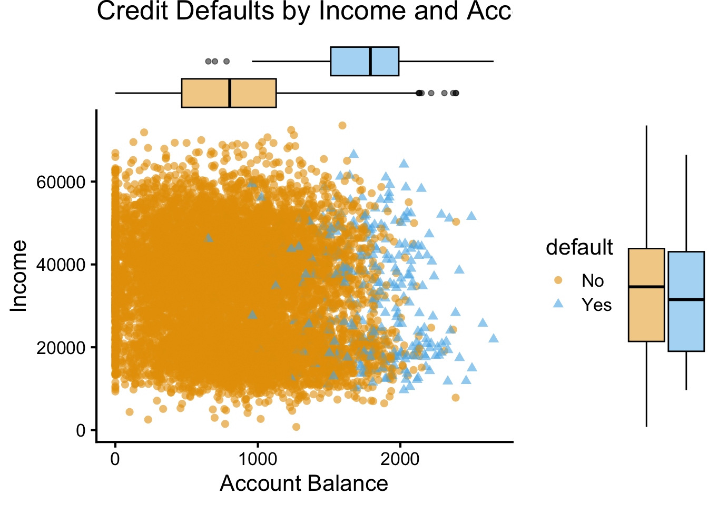
Here’s what lines look like for this dataset:
#lpm_model <- lm(default ~ balance, data=default_df)
default_df |> ggplot(
aes(
x=balance, y=default_num
)
) +
geom_point(aes(color=default)) +
stat_smooth(method="lm", formula=y~x, color='black') +
theme_classic(base_size=16)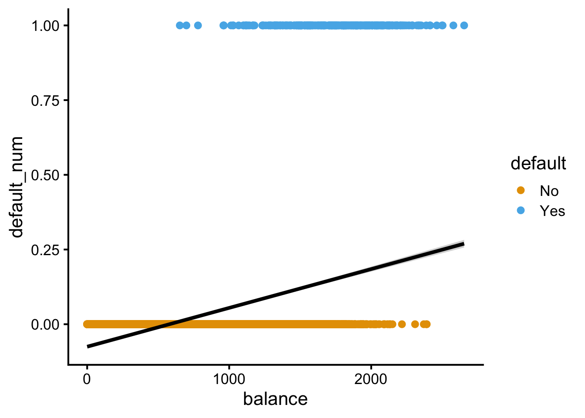
Here’s what sigmoids look like:
library(tidyverse)
logistic_model <- glm(default_num ~ balance, family=binomial(link='logit'),data=default_df)
default_df$predictions <- predict(logistic_model, newdata = default_df, type = "response")
my_sigmoid <- function(x) 1 / (1+exp(-x))
default_df |> ggplot(aes(x=balance, y=default_num)) +
#stat_function(fun=my_sigmoid) +
geom_point(aes(color=default)) +
geom_line(
data=default_df,
aes(x=balance, y=predictions),
linewidth=1
) +
theme_classic(base_size=16)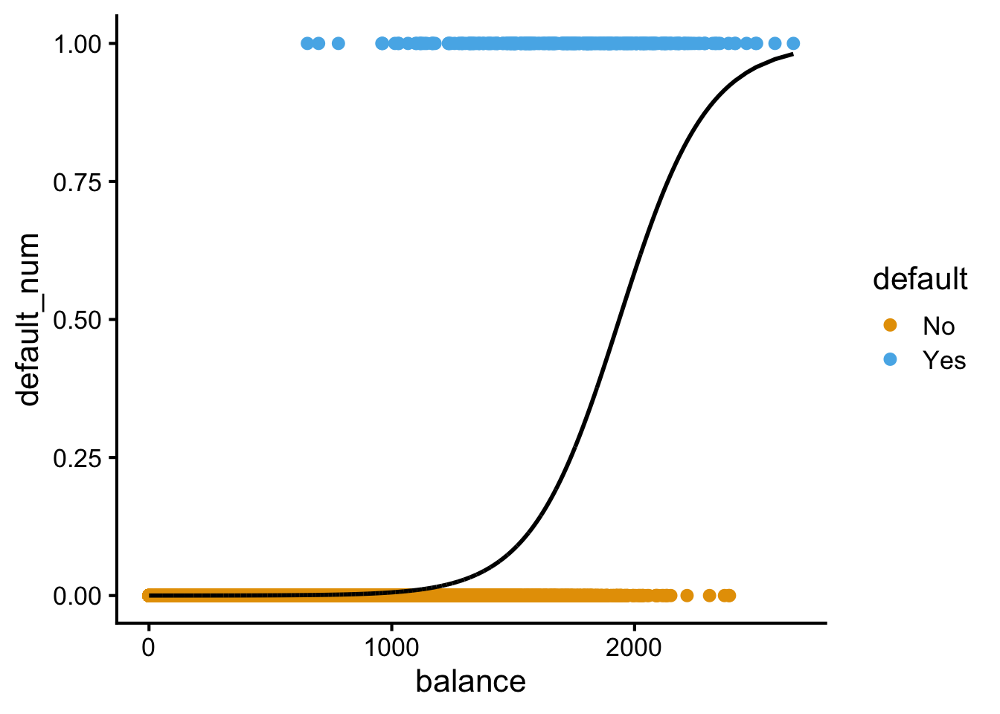
\[ \Pr(Y \mid X) = \beta_0 + \beta_1 X + \varepsilon \]
\[ \log\underbrace{\left[ \frac{\Pr(Y \mid X)}{1 - \Pr(Y \mid X)} \right]}_{\mathclap{\smash{\text{Odds Ratio}}}} = \beta_0 + \beta_1 X + \varepsilon \]
\[ \begin{align*} \Pr(Y \mid X) &= \frac{e^{\beta_0 + \beta_1X}}{1 + e^{\beta_0 + \beta_1X}} \\ \iff \underbrace{\frac{\Pr(Y \mid X)}{1 - \Pr(Y \mid X)}}_{\text{Odds Ratio}} &= e^{\beta_0 + \beta_1X} \\ \iff \underbrace{\log\left[ \frac{\Pr(Y \mid X)}{1 - \Pr(Y \mid X)} \right]}_{\text{Log-Odds Ratio}} &= \beta_0 + \beta_1X \end{align*} \]
\[ L(\beta_0, \beta_1) = \prod_{\{i \mid y_i = 1\}}\Pr(Y = 1 \mid X) \prod_{\{i \mid y_i = 0\}}(1-\Pr(Y = 1 \mid X)) \]
options(scipen = 9)
print(summary(logistic_model))
Call:
glm(formula = default_num ~ balance, family = binomial(link = "logit"),
data = default_df)
Coefficients:
Estimate Std. Error z value Pr(>|z|)
(Intercept) -10.6513306 0.3611574 -29.49 <2e-16 ***
balance 0.0054989 0.0002204 24.95 <2e-16 ***
---
Signif. codes: 0 '***' 0.001 '**' 0.01 '*' 0.05 '.' 0.1 ' ' 1
(Dispersion parameter for binomial family taken to be 1)
Null deviance: 2920.6 on 9999 degrees of freedom
Residual deviance: 1596.5 on 9998 degrees of freedom
AIC: 1600.5
Number of Fisher Scoring iterations: 8\[ \begin{align*} &\log\left[ \frac{\Pr(Y = 1 \mid X)}{1 - \Pr(Y = 1 \mid X)} \right] = \beta_0 + \beta_1 X \\ \iff &\Pr(Y = 1 \mid X) = \frac{\exp[\beta_0 + \beta_1X]}{1 + \exp[\beta_0 + \beta_1X]} = \frac{1}{1 + \exp\left[ -(\beta_0 + \beta_1X) \right] } \end{align*} \]
library(tidyverse)
ad_df <- read_csv("assets/Advertising.csv") |> rename(id=`...1`)New names:
Rows: 200 Columns: 5
── Column specification
──────────────────────────────────────────────────────── Delimiter: "," dbl
(5): ...1, TV, radio, newspaper, sales
ℹ Use `spec()` to retrieve the full column specification for this data. ℹ
Specify the column types or set `show_col_types = FALSE` to quiet this message.
• `` -> `...1`mlr_model <- lm(
sales ~ TV + radio + newspaper,
data=ad_df
)
print(summary(mlr_model))
Call:
lm(formula = sales ~ TV + radio + newspaper, data = ad_df)
Residuals:
Min 1Q Median 3Q Max
-8.8277 -0.8908 0.2418 1.1893 2.8292
Coefficients:
Estimate Std. Error t value Pr(>|t|)
(Intercept) 2.938889 0.311908 9.422 <2e-16 ***
TV 0.045765 0.001395 32.809 <2e-16 ***
radio 0.188530 0.008611 21.893 <2e-16 ***
newspaper -0.001037 0.005871 -0.177 0.86
---
Signif. codes: 0 '***' 0.001 '**' 0.01 '*' 0.05 '.' 0.1 ' ' 1
Residual standard error: 1.686 on 196 degrees of freedom
Multiple R-squared: 0.8972, Adjusted R-squared: 0.8956
F-statistic: 570.3 on 3 and 196 DF, p-value: < 2.2e-16radio and newspaper spending constant…
TV advertising is associated withTV and newspaper spending constant…
radio advertising is associated with